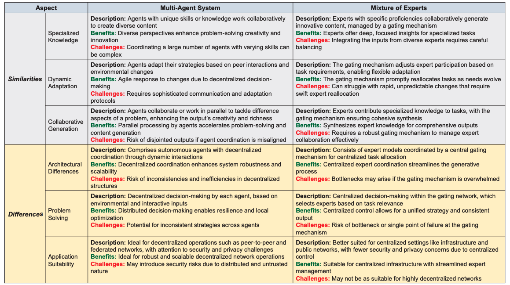
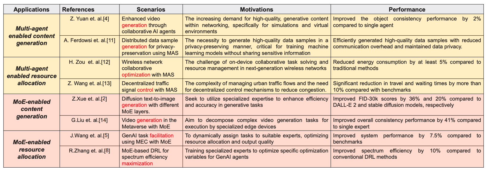
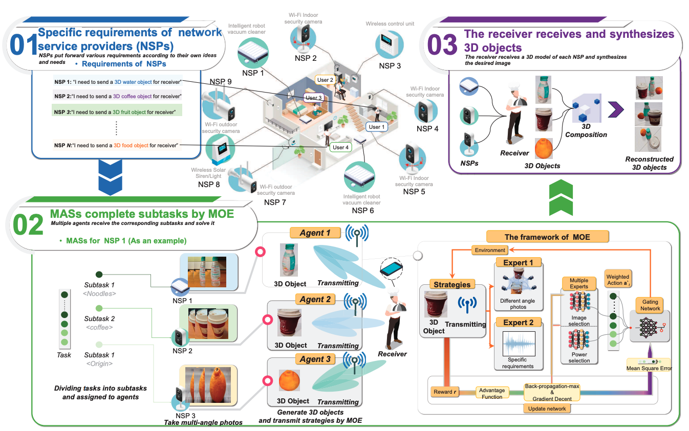

Structure and function of MoE and MAS for GenAI. MoE framework is described as a dynamic network where a central gating mechanism delegates tasks to specialized experts, focusing on feedback for performance optimization and benefits such as precision and customization. MAS is described as a collaborative environment where agents use shared protocols for interaction, decision-making, and context awareness.

Summary of similarity and differences between MAS and MoE for GenAI.

Summary of related works of MAS and MoE for GenAI.

The Structure of system model and proposed solution framework. Multiple NSPs (each NSP responsible for a different type of food) collaborate to collect, process, and tramsit 3D objects of food. The left part of the figure shows the process from collecting various 2D images from different angles for each NSP to generate these images into a 3D object. The right part introduces MoE framework, in which multiple experts, guided by a gating network, optimize specific subtasks, such as image selection and power allocation, to improve efficiency and reduce overall transmission costs.
BibTeX
@article{zhang2024optimizing,
title={Optimizing Generative AI Networking: A Dual Perspective with Multi-Agent Systems and Mixture of Experts},
author={Zhang, Ruichen and Du, Hongyang and Niyato, Dusit and Kang, Jiawen and Xiong, Zehui and Zhang, Ping and Kim, Dong In},
journal={arXiv preprint arXiv:2405.12472},
year={2024}
}